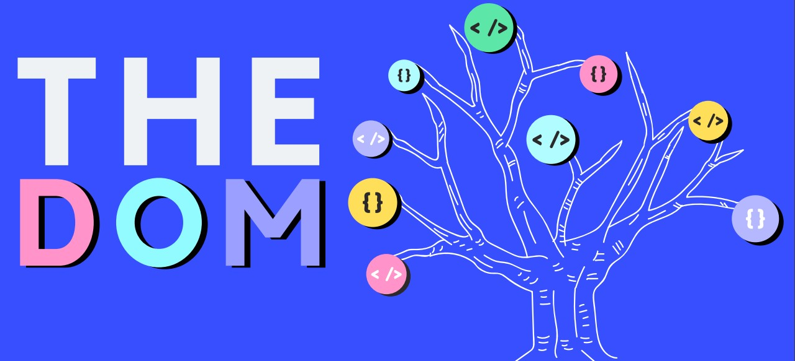
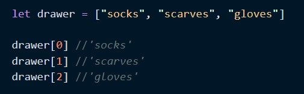
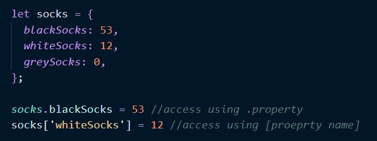

my relationship with HTML, CSS and the DOM
hi I'm javascript! the baddest MF in the programming world - the
G.O.A.T! I have extremely close relations with HTML, CSS and the DOM
because they are my portal to your world and vice versa.
Through the DOM, we three can interact with you - yes YOU beautiful
human, everytime you click, hover or submit a form on a website - and
much more! You could say (but not too loudly) that I'm dependent on
these guys but don't let them know that or I'll never hear the end of
it.

Speaking of the DOM, well he's pretty badass too. Some will say he holds
the key to said portal, but actually - he IS the portal. Though he lives
amongst a forest of object trees full of nodes and is a stickler for
methods and properties, he's easily manipulated and that works to our
advantage. It makes updating and controlling HTML things on-the-fly much
easier.
Get on his good side and you can call him by his first name
'document.' or his alias 'element.'- don't forget that dot! You'll need
it to access stuff from my objects - but I'll talk about that in a
minute.
control flow and two of my bff's
I'm not proud of it but I'm a control freak with a tad bit of OCD. I
perform all my tasks in a certain and very specific order. My childhood
friends all know this about me, they even help to keep things under
control so I don't lose my shit if things go wrong.
My bestie Loops can attest to this. For example I taught her my tea-
making process and she practiced it over and over repeatedly, you know -
in a loop, only she kept forgetting some steps so I had to include
conditional statements so she'd remember.
for each cup of tea do this:
- get the kettle on
- get a clean mug and put tea-bag of choice inside
-
DO NOT put milk in before water or you'll have wasted perfectly good
tea
if user adds milk before water, return 'fail', else do this:
- when kettle has boiled, add hot water to mug
- let tea-bag steep for 3min
- add milk of your choice
return 'sip, relax and enjoy'.
My BFF Functions then came along and automated this entire tea-making
loop. He called it 'makeTea', bundled it into a package and slapped a fat
arrow on top. Now everytime I want to make tea I just call 'makeTea(engBreakfast)'
and voila! a perfect cuppa every time. What can I say? My friends are
pretty awesome.

i keep things nice and tidy
Ok ok now you know I'm a control freak with specific repeptitive actions
that are bundled into functions, so of course it's no surprise I store
my belongings in a very orderly manner using arrays and objects.
Every [item] in one of my drawers (I call them arrays) is accounted for
with an index.

It always starts at zero so you if you need a scarf for the day just
write drawer[1] and hey presto, I present - your scarves.
I also keep an inventory of exactly what type of items are in my
drawers! I usually keep this inventory as an object - a collection of
properties that are key value pairs.

there's that dot again! Use it to access or change properties of an
object.
well I hope you've enjoyed getting to know a bit about me. I
may be difficult to love as I'm very complex, pedantic and sometimes
uncooperative but once you know me I promise it's all worth it.
Ciaoooooo!
shout out to
The real MVP: Colt Steele via Udemy and
Old faithfuls: W3 Schools and MDN via Google